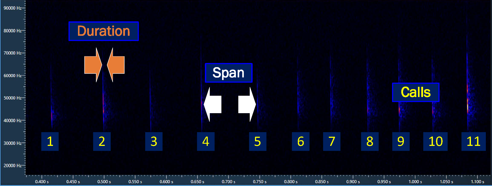

Show the code
statics_with_night <- iBats::date_time_info(statics)Meta Data1 is added as a column or columns to the tidy data. Even with a minimum tidy data set (i.e. species, datetime and geolocation) many columns of useful meta data can be added to enhance the analysis and reporting; described below is simple meta data easily added to tidy data.
Bats are active through the night; the date of the Night is the date at sunset and lasts until sunrise the morning of the following day. The Night is a variable column that is added to the tidy data; it is useful convention that helps avoid the confusion of having contiguous bat activity over two dates.
The Night can be obtained from the iBats package using the date_time_info function. It requires a data.frame or tibble with a DateTime column, the iana2 time zone can be specified; the default is Europe/London.
The code below takes the statics set from the iBats package and adds the Night column, Table 1 shows a selection of 5 rows from the statics data.
statics_with_night %>%
sample_n(5) %>%
select(Description, Night, DateTime, Species) %>%
# Table made with library(gt)
gt() %>%
tab_style(
style = list(
cell_fill(color = "midnightblue"),
cell_text(color = "white"),
cell_text(weight = "normal")
),
locations = cells_body(
columns = Night
)
) %>%
tab_style(
style = list(
cell_fill(color = "midnightblue"),
cell_text(color = "white"),
cell_text(weight = "bold")
),
locations = cells_column_labels(
columns = Night
)
) %>% # reduce cell space
tab_options(data_row.padding = px(2)) %>%
cols_align(
align = "left",
columns = c(Night, DateTime)
)| Description | Night | DateTime | Species |
|---|---|---|---|
| Static 4 | 2016-08-24 | 2016-08-25 01:58:59 | Pipistrellus pipistrellus |
| Static 4 | 2016-08-04 | 2016-08-04 23:11:37 | Pipistrellus pipistrellus |
| Static 4 | 2016-06-12 | 2016-06-13 01:50:48 | Pipistrellus pipistrellus |
| Static 4 | 2016-07-30 | 2016-07-31 01:08:12 | Pipistrellus pipistrellus |
| Static 2 | 2016-10-10 | 2016-10-10 19:39:35 | Plecotus spp. |
The function iBats::date_time_info() adds the date and time information: month, year and time see Table 2. (Note: the JustTime column is plus 12 hours this aids plotting continuously on one axis as shown in this graph). Only a random selection of 5 rows from the statics set is shown in Table 2.
statics_with_night %>%
sample_n(5) %>%
select(Description, DateTime, Species, Month, MonthFull, Year, JustTime) %>%
# Table made with library(gt)
gt() %>%
tab_style(
style = list(
cell_fill(color = "lightcyan"),
cell_text(color = "black"),
cell_text(weight = "normal")
),
locations = cells_body(
columns = c(Month, MonthFull, Year, JustTime)
)
) %>%
tab_style(
style = list(
cell_fill(color = "lightcyan"),
cell_text(color = "black"),
cell_text(weight = "bold")
),
locations = cells_column_labels(
columns = c(Month, MonthFull, Year, JustTime)
)
) %>%
tab_options(data_row.padding = px(2)) %>%
cols_align(
align = "left",
columns = DateTime)| Description | DateTime | Species | Month | MonthFull | Year | JustTime |
|---|---|---|---|---|---|---|
| Static 2 | 2016-08-15 01:44:55 | Pipistrellus pygmaeus | Aug | August | 2016 | 13:44:55 |
| Static 3 | 2016-08-13 22:10:52 | Pipistrellus pipistrellus | Aug | August | 2016 | 10:10:52 |
| Static 2 | 2016-06-26 00:19:49 | Rhinolophus ferrumequinum | Jun | June | 2016 | 12:19:49 |
| Static 2 | 2016-06-05 04:11:35 | Pipistrellus pipistrellus | Jun | June | 2016 | 16:11:35 |
| Static 4 | 2016-07-31 21:16:24 | Pipistrellus pipistrellus | Jul | July | 2016 | 09:16:24 |
A useful approach for bat data analysis is to reference all bat activity (i.e. DateTime) to the time of sunset and sunrise for the Night and location(i.e. Latitude and Longitude). From this starting point, the minutes after sunset (and minutes before sunrise) that each bat activity occurred can be calculated; these can then be converted to decimal hours and integer hours so bat activity can be visualised in ways that help interpret the bat activity.
Referencing the DateTime of bat activity to sunset and sunrise is achieved with the use of the suncalc package (Thieurmel and Elmarhraoui 2022). The iBats package makes use of suncalc in its sun_night_metrics fuction; this takes a dataframe that must include the columns: Night, DateTime, Latitude and, Longitude - and calculates the following columns:
sunset - sun set time for the Night date and Latitude and, Longitudesunrise - sun rise time for the Night date and Latitude and, Longitudepost_set_min- time in minutes the bat was observed after sun setpre_rise_min - time in minutes the bat was observed before sun risepost_set_hr - time in hours (decimal) the bat was observed after sun setpre_rise_hr - time in hours (decimal) the bat was observed before sun risepost_set_hr_int - time in hours (integer) the bat was observed after sun setpre_rise_hr_int - time in hours (integer) the bat was observed before sun risenight_length_hr - night length in hours (decimal) difference between sunset and sunriseTable 3 shows a selection of 5 rows from the statics data with the DateTime column and the Night column already added3, the function iBats::sun_night_metrics() calculates the columns listed above, the following columns are shown: sunset, post_set_min, and, post_set_hr_int.
Loading required package: devtoolsLoading required package: usethis# If iBats not installed load from Github
if(!require(iBats)){
devtools::install_github("Nattereri/iBats")
}
library(iBats)
library(gt)
# Add data and time information to the statics data using the iBats::date_time_info
statics_plus <- iBats::date_time_info(statics)
# Add sun and night time metrics to the statics data using the iBats::sun_night_metrics() function.
statics_plus <- iBats::sun_night_metrics(statics_plus)
statics_plus %>%
sample_n(5) %>%
select(Night, DateTime, sunset, post_set_min, post_set_hr_int) %>%
# Table made with library(gt)
gt() %>%
tab_style(
style = list(
cell_fill(color = "pink"),
cell_text(color = "black"),
cell_text(weight = "normal")
),
locations = cells_body(
columns = c(sunset, post_set_min, post_set_hr_int)
)
) %>%
tab_style(
style = list(
cell_fill(color = "pink"),
cell_text(color = "black"),
cell_text(weight = "bold")
),
locations = cells_column_labels(
columns = c(sunset, post_set_min, post_set_hr_int)
)
) %>%
tab_options(data_row.padding = px(2)) %>%
cols_align(
align = "left",
columns = c(Night, DateTime, sunset))| Night | DateTime | sunset | post_set_min | post_set_hr_int |
|---|---|---|---|---|
| 2016-07-29 | 2016-07-30 03:04:26 | 2016-07-29 21:04:06 | 360.33333 | 6 |
| 2016-08-04 | 2016-08-04 22:47:09 | 2016-08-04 20:54:49 | 112.33333 | 2 |
| 2016-06-07 | 2016-06-07 22:45:34 | 2016-06-07 21:23:08 | 82.43333 | 1 |
| 2016-07-29 | 2016-07-30 05:15:40 | 2016-07-29 21:04:06 | 491.56667 | 8 |
| 2016-06-07 | 2016-06-07 22:00:01 | 2016-06-07 21:23:08 | 36.88333 | 1 |
Common bat names are readily understood by the lay reader and should be available for graphs and tables; it is easily added as an additional column using the Scientific names column as a starting point.
By convention scientific names are written as italic; to highlight the common names in Table 4 the column is written in bold.
library(iBats)
# Look up list of Uk bat common names and the scientific names
BatCommonUK <- c(
"Barbastella barbastellus" = "Barbastelle",
"Myotis alcathoe" = "Alcathoe",
"Myotis bechsteinii" = "Bechstein's",
"Myotis brandtii" = "Brandt's",
"Myotis daubentonii" = "Daubenton's",
"Myotis mystacinus" = "Whiskered",
"Myotis spp." = "Myotis",
"Rhinolophus ferrumequinum" = "Greater horseshoe",
"Rhinolophus hipposideros" = "Lesser horseshoe",
"Nyctalus leisleri" = "Leisler's",
"Plecotus auritus" = "Brown long-eared",
"Plecotus austriacus" = "Grey long-eared",
"Pipistrellus nathusii" = "Nathusius pipistrelle",
"Myotis nattereri" = "Natterer's",
"Nyctalus noctula" = "Noctule",
"Nyctalus spp." = "Noctule or Leisler's",
"Eptesicus serotinus" = "Serotine",
"Pipistrellus pipistrellus" = "Common pipistrelle",
"Pipistrellus pygmaeus" = "Soprano pipistrelle",
"Pipistrellus spp." = "Pipistrelle",
"Plecotus spp." = "Long-eared")
# From Scientific name create a Common Name Vector
statics$Common <- unname(BatCommonUK[statics$Species])library(tidyverse)
library(gt)
statics %>%
sample_n(10) %>%
select(Description, DateTime, Species, Common) %>%
# Table made with library(gt)
gt() %>%
tab_style(
style = list(
cell_fill(color = "black"),
cell_text(color = "white", weight = "bold")
),
locations = cells_column_labels(
columns = c(everything())
)
) %>%
# Make bat scientific name italic
tab_style(
style = list(
cell_text(style = "italic")
),
locations = cells_body(
columns = c(Species)
)) %>%
# Make bat common name bold
tab_style(
style = list(
cell_text(weight = "bold")
),
locations = cells_body(
columns = Common
)
) %>%
tab_options(data_row.padding = px(2)) %>%
cols_align(
align = "left",
columns = DateTime)| Description | DateTime | Species | Common |
|---|---|---|---|
| Static 4 | 2016-06-13 02:14:51 | Pipistrellus pipistrellus | Common pipistrelle |
| Static 1 | 2016-06-06 00:20:18 | Pipistrellus pipistrellus | Common pipistrelle |
| Static 4 | 2016-07-30 22:25:21 | Pipistrellus pipistrellus | Common pipistrelle |
| Static 4 | 2016-07-29 00:07:42 | Pipistrellus pipistrellus | Common pipistrelle |
| Static 4 | 2016-07-27 03:54:21 | Pipistrellus pipistrellus | Common pipistrelle |
| Static 2 | 2016-09-19 21:01:39 | Pipistrellus spp. | Pipistrelle |
| Static 4 | 2016-07-31 22:39:33 | Pipistrellus pipistrellus | Common pipistrelle |
| Static 4 | 2016-07-29 01:26:49 | Pipistrellus pipistrellus | Common pipistrelle |
| Static 1 | 2016-06-21 01:06:47 | Pipistrellus pipistrellus | Common pipistrelle |
| Static 4 | 2016-10-16 19:13:08 | Pipistrellus pipistrellus | Common pipistrelle |
A look up list of bat common names is easily created for other regions; rather than write the list yourself ask a Large Language Model (LLM) to do this for you (e.g. Bard4 or ChatGPT5)
This is the Bard and ChatGPT request text to create a look up vector for European/North America/Australia bat names:
List, as a code snippet, all the bat species recorded in Australia as an R look up named vector, Scientific name = Common name.
It may be beneficial to use more than one LLM; an individual LLM may not be comprehensive!
Europe
The scientific and common bat name list for Europe; click the Show the code below.
# This is the output from Bard/ChatGPT for Europe
scientific_common_lookup <- c("Rhinolophus ferrumequinum" = "Greater horseshoe bat",
"Rhinolophus euryale" = "Mediterranean horseshoe bat",
"Rhinolophus hipposideros" = "Lesser horseshoe bat",
"Rhinolophus mehelyi" = "Méhely's horseshoe bat",
"Rhinolophus blasii" = "Blasius' horseshoe bat",
"Miniopterus schreibersii" = "Common Bent-wing Bat",
"Myotis mystacinus" = "Whiskered bat",
"Myotis capaccinii" = "Long-fingered Bat",
"Myotis brandtii" = "Brandt's bat",
"Myotis daubentonii" = "Daubenton's bat",
"Myotis dasycneme" = "Pond Bat",
"Myotis emarginatus" = "Geoffroy's Bat",
"Myotis nattereri" = "Natterer's bat",
"Myotis bechsteinii" = "Bechstein's bat",
"Nyctalus leisleri" = "Leisler's bat",
"Nyctalus noctula" = "Noctule",
"Nyctalus aviator" = "Noctule",
"Nyctalus lasiopterus" = "Greater Noctule",
"Plecotus auritus" = "Long-eared bat",
"Plecotus austriacus" = "Grey long-eared bat",
"Barbastella barbastellus" = "Barbastelle",
"Eptesicus serotinus" = "Serotine bat",
"Eptesicus nilssonii" = "Northern Bat",
"Pipistrellus pygmaeus" = "Soprano pipistrelle",
"Miniopterus schreibersii" = "Common bent-wing bat",
"Eptesicus isabellinus" = "Mediterranean serotine",
"Rousettus aegyptiacus" = "Egyptian fruit bat",
"Tadarida teniotis" = "Free-tailed bat",
"Myotis myotis" = "Greater mouse-eared bat",
"Myotis blythii" = "Lesser mouse-eared bat",
"Myotis oxygnathus" = "Anatolian Mouse-eared Bat",
"Barbastella barbastellus" = "Western barbastelle",
"Plecotus sardus" = "Sardinian bat",
"Plecotus teneriffae" = "Teneriffe bat",
"Hypsugo savii" = "Savi's Pipistrelle",
"Pipistrellus pipistrellus" = "Common pipistrelle",
"Pipistrellus nathusii" = "Nathusius' pipistrelle",
"Pipistrellus kuhlii" = "Kuhl's Pipistrelle",
"Pipistrellus maderensis" = "Madeiran bat",
"Pipistrellus azoreum" = "Azores pipistrelle",
"Pipistrellus hanaki" = "Hanaki's pipistrelle",
"Vespertilio murinus" = "Parti-coloured Bat")North America
The scientific and common bat name list for North America; click the Show the code below.
# This is the output from Bard for North America
scientific_common_lookup <- c("Macrotus californicus" = "California leaf-nosed bat",
"Myotis austroriparius" = "Southern myotis",
"Myotis borealis" = "Northern long-eared bat",
"Myotis lucifugus" = "Little brown bat",
"Myotis septentrionalis" = "Northern myotis",
"Myotis sodalis" = "Indiana bat",
"Eptesicus fuscus" = "Big brown bat",
"Lasiurus borealis" = "Northern red bat",
"Lasiurus cinereus" = "Hoary bat",
"Lasiurus ega" = "Desert long-eared bat",
"Pipistrellus hesperus" = "Western pipistrelle",
"Pipistrellus subflavus" = "Eastern pipistrelle",
"Nyctinomops macrotis" = "Big-eared bat",
"Lasionycteris noctivagans" = "Silver-haired bat",
"Perimyotis subflavus" = "Flannel-mouthed bat",
"Scotophilus mexicanus" = "Mexican free-tailed bat",
"Tadarida brasiliensis" = "Brazilian free-tailed bat",
"Choeronycteris mexicana" = "Mexican long-tongued bat",
"Eumops perotis" = "Pallid bat",
"Nyctinomops femorosaccus" = "Fist-sized bat",
"Nyctalus lasiopterus" = "Greater noctule",
"Plecotus townsendii" = "Townsend's big-eared bat")Australia
The scientific and common bat name list for Australia; click the Show the code below.
# This is the output from ChatGPT for Australia
scientific_common_lookup <- c("Chalinolobus dwyeri" = "Large-footed Myotis",
"Chalinolobus gouldii" = "Gould's Wattled Bat",
"Chalinolobus morio" = "Chocolate Wattled Bat",
"Chalinolobus nigrogriseus" = "Little Pied Bat",
"Chalinolobus picatus" = "Eastern Horseshoe Bat",
"Chalinolobus tuberculatus" = "Large-eared Pied Bat",
"Miniopterus australis" = "Small Bent-wing Bat",
"Miniopterus orianae" = "Eastern Bent-wing Bat",
"Miniopterus schreibersii" = "Common Bent-wing Bat",
"Miniopterus tenuipollens" = "Lesser Bent-wing Bat",
"Nyctophilus arnhemensis" = "Arnhem Leaf-nosed Bat",
"Nyctophilus corbeni" = "Corben's Long-eared Bat",
"Nyctophilus geoffroyi" = "Common Long-eared Bat",
"Nyctophilus gouldi" = "Gould's Long-eared Bat",
"Nyctophilus major" = "Large-eared Pied Bat",
"Nyctophilus sherrini" = "Eastern Long-eared Bat",
"Nyctophilus sp." = "Unknown Long-eared Bat",
"Nyctophilus walkeri" = "Walker's Long-eared Bat",
"Scoteanax rueppellii" = "Rüppell's Broad-nosed Bat",
"Scoteanax sp." = "Unknown Broad-nosed Bat",
"Saccolaimus flaviventris" = "Yellow-bellied Sheath-tailed Bat",
"Saccolaimus saccolaimus" = "Greater Saccolaimus",
"Tadarida australis" = "White-striped Free-tailed Bat",
"Taphozous australis" = "Common Sheath-tailed Bat",
"Vespadelus baverstocki" = "Baverstock's Bonneted Bat",
"Vespadelus darlingtoni" = "Darlington's Bonneted Bat",
"Vespadelus regulus" = "Southern Forest Bat",
"Vespadelus vulturnus" = "Eastern Forest Bat")Adding a A Country’s grid reference coordinates as meta data is useful; it allows a friendly export to other GIS and engineering drawing software (e.g. QGIS, ArcView® and AutoCAD®). A Country’s grid reference coordinates can be transformed from the Longitude and Latitude; in the tidy statics data longitude and latitude are based on the World Geodetic System 19846 (WGS84), the green column in Table 5 shows the British National Grid coordinates obtained from the longitude and latitude.
### Libraries Used
library(tidyverse) # Data Science packages - see https://www.tidyverse.org/
library(sf) # Simple features access between data and GIS
# Install devtools if not installed
# devtools is used to install the iBats package from GitHub
if(!require(devtools)){
install.packages("devtools")
}
# If iBats is not installed load from Github
if(!require(iBats)){
devtools::install_github("Nattereri/iBats")
}
library(iBats)
# Select Longitude & Latitude from the statics data in the iBats package
lon_lat <- statics %>%
select(lon = Longitude, lat = Latitude)
lon_lat = st_as_sf(lon_lat, coords = c("lon", "lat"))
# Set the original coordinate reference system (CRS)
# The EPSG code is used to define the CRS
data_WSG84 = st_set_crs(lon_lat, 4326)
# Transform the existing coordinates to the new projection
# British National Grid is the new projection which as an EPSG:27700
data_BNG = st_transform(data_WSG84, 27700)
# Create simple feature geometry list column
data_BNG_geom <- st_geometry(data_BNG)
nc2 = st_sf(geom=data_BNG_geom)
# retrieve coordinates in matrix form
data_BNG_matrix <- st_coordinates(nc2)
#Assign Eastings and Northings to seperate columns
Easting <- data_BNG_matrix[,1]
Northing <- data_BNG_matrix[,2]
# Make a data.frame
data_BNG_df <- tibble(Easting, Northing)
# Make a British National Grid Reference column ("GridRef)
# keep the Easting & Northings columns
data_BNG_df <- data_BNG_df %>%
unite("GridRef", c("Easting", "Northing"), sep = ",", remove = FALSE)
# Add columns to the statics data set
statics_plus <- cbind(statics, data_BNG_df)library(tidyverse)
library(gt)
statics_plus %>%
sample_n(10) %>%
select(Species, Longitude, Latitude, GridRef) %>%
# Table made with library(gt)
gt() %>%
tab_style(
style = list(
cell_fill(color = "black"),
cell_text(color = "white", weight = "bold")
),
locations = cells_column_labels(
columns = c(everything())
)
) %>%
# Make bat scientific name italic
tab_style(
style = list(
cell_text(style = "italic")
),
locations = cells_body(
columns = c(Species)
)) %>%
tab_style(
style = list(
cell_fill(color = "forestgreen"),
cell_text(color = "white"),
cell_text(weight = "normal")
),
locations = cells_body(
columns = c(GridRef)
)
) %>%
tab_style(
style = list(
cell_fill(color = "forestgreen"),
cell_text(color = "white"),
cell_text(weight = "normal")
),
locations = cells_column_labels(
columns = c(GridRef)
)
) %>%
tab_options(data_row.padding = px(2))| Species | Longitude | Latitude | GridRef |
|---|---|---|---|
| Pipistrellus pipistrellus | -3.591048 | 50.33094 | 286854.431403263,49101.2549532561 |
| Myotis spp. | -3.591808 | 50.33126 | 286801.102694949,49137.9914956368 |
| Pipistrellus pipistrellus | -3.591798 | 50.33132 | 286801.957123455,49144.6474465514 |
| Pipistrellus pipistrellus | -3.591878 | 50.33141 | 286796.477591845,49154.7760258182 |
| Pipistrellus pipistrellus | -3.595008 | 50.33221 | 286575.621663931,49248.4957881758 |
| Pipistrellus pipistrellus | -3.591768 | 50.33133 | 286804.11602111,49145.7136310115 |
| Pipistrellus pipistrellus | -3.591758 | 50.33132 | 286804.803937794,49144.5865421783 |
| Pipistrellus pipistrellus | -3.592228 | 50.33091 | 286770.378328093,49099.7158903753 |
| Plecotus spp. | -3.592583 | 50.33323 | 286750.61980236,49357.5417145688 |
| Pipistrellus pipistrellus | -3.593018 | 50.33101 | 286714.381797414,49111.5932755259 |
EPSG stands for European Petroleum Survey Group, the organization that originally developed a standardized set of codes for referencing spatial data in cartography. The EPSG codes, also known as EPSG numbers or EPSG identifiers, are widely used in mapping and Geographic Information Systems (GIS).
The EPSG code is a numerical identifier that represents a specific coordinate system or datum used for spatial reference. The EPSG code 4326 corresponds to the WGS84 coordinate system, which is a widely used datum for representing latitude and longitude coordinates on the Earth’s surface. EPSG codes identify coordinate reference systems (CRSs) used by many different software applications, including R packages, mapping software, and web mapping applications.
The EPSG codes are maintained and published by the International Association of Oil and Gas Producers (IOGP). A comprehensive list of EPSG codes, along with their definitions and descriptions can be found here.
Some convenient EPSG codes are:
The limitation of bat passes has been recognised (Sowler and Middleton 2013), bat identification software that use full spectrum recording, generate other characteristics from a bat call, or sequence of calls; these characteristics can be used to calculate other indices of activity. Elekon’s BatExplorer7 and Wildlife Acoustics’ Kaleidoscope8 produce the number of calls or pulses in an recording together with the:
duration of the call or sequence of callsspan of time between callsThe calls, duration and span characteristics, see Figure 1, supply an opportunity to calculate the time a bat is present (i.e near the detector); this bat activity time provides the length of time a bat is nearby during the observation, and is a helpful measurement when assessing bat activity.
The Bat Activity Time , in seconds, can be calculated with Equation 1:
\[BatActivityTime\ =\ \dfrac{calls\left(duration\ + span\right)}{1000} \tag{1}\]
Where:
calls - number of calls
duration - average call length (ms)
span - average time between calls (ms)
The division by 1000 is to convert milliseconds(ms) to seconds

Calculating the time bats are present, enhances the bat activity narrative; an extended bat presence may indicate feeding, while a short duration could mean commuting. Too often this information remains unexploited.
Table 6 shows the calculated BatActivityTime from a .csv file(BatExplorer) exported from Elekon AG BatExplorer software. The BatExplorer csv file is in the iBats package and describes a transect recorded with a Batlogger M bat detector near the the River Tavy, West Devon.
### Libraries Used
library(tidyverse) # Data Science packages - see https://www.tidyverse.org/
# Install devtools if not installed
# devtools is used to install the iBats package from GitHub
if(!require(devtools)){
install.packages("devtools")
}
# If iBats is not installed load from Github
if(!require(iBats)){
devtools::install_github("Nattereri/iBats")
}
library(iBats)
# BatExplorer csv file is from the iBats package
BatExplorer %>%
mutate(calls = `Calls [#]`,
duration = `Mean Call Lenght [ms]`,
span = `Mean Call Distance [ms]`,
# Calculate BatActivityTime in seconds
BatActivityTime = calls * (duration + span) / 1000) library(gt)
BatExplorer %>%
mutate(calls = `Calls [#]`,
duration = `Mean Call Lenght [ms]`,
span = `Mean Call Distance [ms]`,
# Calculate BatActivityTime in seconds
BatActivityTime = calls * (duration + span) / 1000) %>%
#Select just the columns used in the calculation and a few rows of data
select(Species = `Species Text`,
calls,
duration,
span,
`BatActivityTime (seconds)` = BatActivityTime) %>%
head(n=10L) %>%
# Table made with library(gt)
gt() %>%
tab_style(
style = list(
cell_fill(color = "black"),
cell_text(color = "white", weight = "bold")
),
locations = cells_column_labels(
columns = c(everything())
)
) %>%
# Make bat scientific name italic
tab_style(
style = list(
cell_text(style = "italic")
),
locations = cells_body(
columns = c(Species)
)) %>%
tab_style(
style = list(
cell_fill(color = "wheat"),
cell_text(color = "black"),
cell_text(weight = "bold")
),
locations = cells_body(
columns = c(`BatActivityTime (seconds)`)
)
) %>%
tab_style(
style = list(
cell_fill(color = "wheat"),
cell_text(color = "black"),
cell_text(weight = "bold")
),
locations = cells_column_labels(
columns = c(`BatActivityTime (seconds)`)
)
) %>%
tab_options(data_row.padding = px(2))| Species | calls | duration | span | BatActivityTime (seconds) |
|---|---|---|---|---|
| Pipistrellus pygmaeus | 12 | 7.0 | 90 | 1.1640 |
| Nyctalus noctula | 18 | 23.8 | 340 | 6.5484 |
| Nyctalus noctula | 34 | 16.0 | 150 | 5.6440 |
| Nyctalus noctula | 10 | 14.0 | 480 | 4.9400 |
| Pipistrellus pygmaeus | 30 | 7.0 | 90 | 2.9100 |
| Pipistrellus pygmaeus | 31 | 5.0 | 80 | 2.6350 |
| Pipistrellus pygmaeus | 30 | 5.0 | 80 | 2.5500 |
| Pipistrellus pygmaeus | 39 | 5.0 | 90 | 3.7050 |
| Pipistrellus pygmaeus | 48 | 5.0 | 90 | 4.5600 |
| Nyctalus noctula | 1 | 8.5 | 0 | 0.0085 |
Meta data can also be a one line description (e.g. a site telephone number); here we follow the principles of tidy data where all the information is contained in a single row of the data file.↩︎
a full list of time zones can be found here https://en.wikipedia.org/wiki/List_of_tz_database_time_zones↩︎
with iBats::date_time_info()↩︎
http://www.batlogger.com/en/real-time-systems/batexplorer-2-software.html↩︎
https://www.wildlifeacoustics.com/products/kaleidoscope-software-ultrasonic↩︎